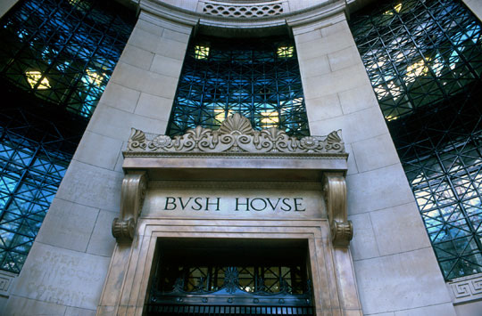

- Title Page
- Introduction
- BBC and Britain
- BBC Leadership
- Today Programme
- Birth of a Story
- Preparing to Broadcast
- May 29, 6:07 2-way
- First Protests
- Upping the Ante
- Review at High Levels
- Back and Forth
- Foreign Affairs Committee Hearings
- BBC Response
- On a Roll
- Letters Flying
- Campbell on Channel Four
- Defuse or Fight?
BBC and Britain
The BBC was perhaps the most beloved and trusted institution in Britain, vying for that distinction with the monarchy. While it had been respected since its founding in 1927, World War II had brought the BBC prominence as a trusted voice for the Allies, eagerly listened to by resistance forces across occupied Europe and wherever its signal reached. [2] It was affectionately known variously as “The Beeb” or “Auntie.” Until 1955, the BBC enjoyed a monopoly on television broadcasts within Britain, and its radio monopoly continued into the 1970s. [3] The BBC’s stated purpose, as articulated by the turn of the 21st century, was to “to enrich people’s lives with programmes and services that inform, educate and entertain.” [4]
 Bush House, BBC main office. Its premier product was the BBC World Service, which broadcast radio programs to an estimated 150 million weekly listeners worldwide in 43 languages. [5] In Britain, its programs enjoyed high public approval—in January 2003 it registered a record 7.1 out of 10 confidence rating (the prior year average was 6.8). It reached 92.7 percent of the British population with its broadcasts and other services. While numerous competitors had sprung up since the days of its monopoly, it could still in 2003 claim a 40 percent share of the television viewing audience, and over 50 percent of the radio listening audience.
By 2003, the state-owned BBC was also a sizeable bureaucracy. It had expanded well beyond its radio roots. Some 26,000 people (7,000 of them journalists) worked for its two television channels (BBC1 and BBC2); five major national radio stations plus a network of local stations; and its website, bbc.co.uk. BBC News, which provided the content for all BBC radio and television news programs, was the largest broadcast newsgathering operation in the world. It had 10 times as many journalists as any national British newspaper, and broadcast hundreds of hours of news and current affairs every day to audiences at home and abroad.
Footnotes
[2] The British Broadcasting Company radio network was in fact created in 1922; it incorporated under a Royal Charter in 1927, becoming the British Broadcasting Corporation.
[3] The BBC’s first television competition came from the commercial network ITV.
[4] About the BBC: Mission and values.
[5] Ian Burrell, “Media: The BBC’s fundamental strength is its independence,” Independent (London), July 15, 2003, p.11.